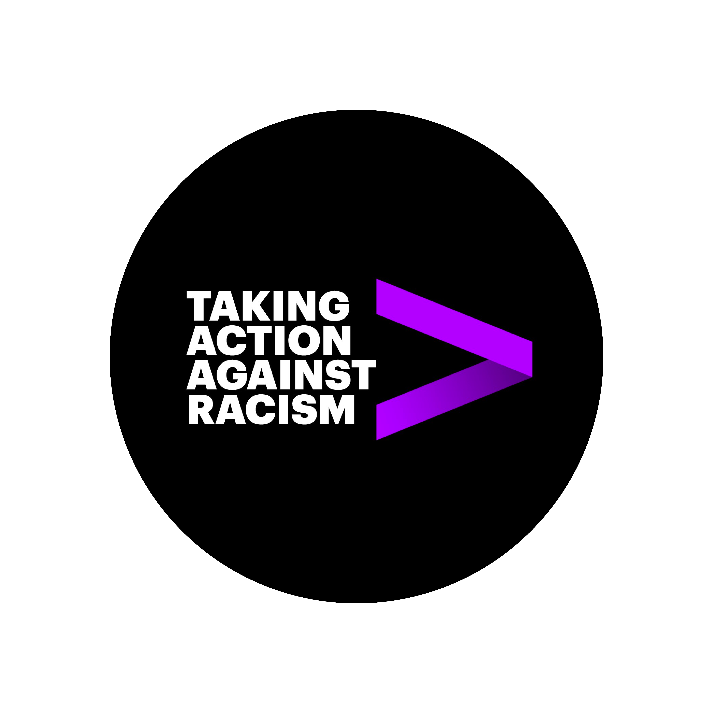
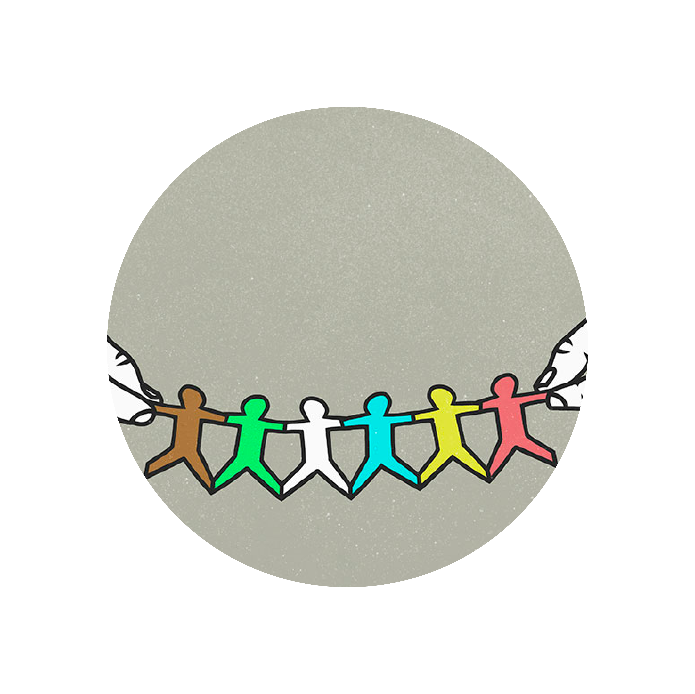

The combination of a turbulent geopolitical environment, the COVID-19 pandemic, increasing income inequality, and the growing prominence of the Black Lives Matters movement has forced professional-services firms to rethink their values and how they want to be perceived in the marketplace and by their own employees. The result is a profound shift in marketing strategy, including a surprising willingness among some firms to take public positions that are at odds with the powers that be. In addition, firms have continued to refine their internal approaches to diversity and inclusion following the killing of George Floyd in May as well as to intensify publishing thought leadership on the issue.
Let’s review what some of the firms have been doing.
EY
In this LinkedIn post, Accenture’s leadership details the firm’s commitment to increase the representation of Black and Hispanic and Latin American people in its US workforce.

Accenture
Update on actions—we stand against racism”
“
Timothy F. Ryan, chair and senior partner of PwC US, announced that his firm was publicly releasing, for the first time, its diversity data and strategy.
PwC
Building on a culture of belonging: PwC’s first D&I transparency report”
“
Back to top

Taking provocative stances
McKinsey & Company
Safeguarding our lives and our livelihoods: The imperative of our time”
“
In this provocative article published in March, McKinsey authors took direct issue with Wall Street Journal editors and, by extension, the Trump administration. McKinsey partners are usually quite careful about offending governments or companies, but clearly the pandemic—not to mention the shootings of Breonna Taylor, George Floyd, Jacob Blake, and others—has pushed its leadership over the edge.
Acting on diversity and inclusion
The killing of George Floyd compelled professional-services firms to overhaul their approaches to diversity and inclusion. Their reconsideration has been reflected in public statements and commitments, and, to some extent, in the topics they pursue in thought leadership. Let’s catch up with firms’ statements on the subject since June.
The CEO of BCG, Rich Lesser, cosigned this July 30 article from the Business Roundtable. The authors urge government officials to take more steps to control the pandemic. It’s written in polite language, but it doesn’t take much imagination to read it as a criticism of the Trump administration’s response to COVID-19.

BCG
A better strategy for reopening our communities, schools, and economy”
This LinkedIn post from Lesser doesn’t mince words in criticizing the Trump administration’s attempt to force some foreign students to leave the country (the policy was subsequently withdrawn).
BCG joins Amicus Brief opposing latest ICE directive”
“
“
Bain’s worldwide managing partner, Manny Maceda, announced the appointment of several partners to lead the firm’s newly created diversity, equity, and inclusion efforts.
Bain & Company
Bain & Company announces three new leadership positions focused on diversity, equity & inclusion”
“
Booz Allen announced a new employee giving campaign to support the Black community through partnerships with the Equal Justice Initiative, the Thurgood Marshall College Fund, Year Up, and Black Girls Code.
Booz Allen Hamilton
On Giving Black Day, Booz Allen strengthens its commitment to racial and social equity with new employee giving campaign”
“
Booz Allen joins Mansfield Rule certification pilot to increase diversity and inclusion in legal departments”
“
I had never heard of the Mansfield Rule until I read this press release. The rule is meant to encourage diversity in the leadership of the legal profession. Booz Allen announced it was joining the certification process to increase diversity in its legal department and in its use of outside counsel.
Stanton Chase
Stanton Chase leads AESC pledge against racial, social injustice”
This executive search firm announced that it had signed a pledge sponsored by the Association of Executive Search and Leadership Consultants committing it to pursuing inclusion in leadership teams.
“
In thought leadership, McKinsey has been especially active in addressing diversity and inclusion issues. In dealing with these issues head on, McKinsey and other firms have been indirectly contradicting the policies of the Trump administration, which pays lip service to racial and gender inequality. Some firms have decided that their long-term business interests are better served by confronting these difficult topics than by staying silent.
Aggressively pursuing thought leadership on diversity, inclusion, and inequality
This report focuses on the issues facing Hispanic and Latin Americans in the wake of the pandemic and possible interventions to foster more equitable public-health and economic outcomes. (In April, McKinsey published a detailed look at the impact of COVID-19 on Black Americans.)
McKinsey & Company
US Hispanic and Latino lives and livelihoods in the recovery from COVID-19
This article discusses the impact of the pandemic on Asian Americans. It speaks in part to the rise in anti-Asian bias during the pandemic, encouraged by the Trump administration’s use of anti-Asian rhetoric.

COVID-19 and advancing Asian American recovery”
“
Racial equity in financial services”
“
The W.K. Kellogg Foundation teamed up with McKinsey to examine racial equity in the financial services sector. One eye-opening finding: “At the entry level of US financial services firms, the proportion of people of color is in line with their representation in society—around 40 percent. However, this share falls steadily along the corporate pipeline until, by the C-suite, it has dropped by 75 percent. Nine out of ten people at this level are white.”
More Black Americans say their job and income have been negatively affected by COVID-19 compared with white Americans, this series of charts shows.
How COVID-19 has impacted Black-white financial inequality”
“
This piece looks at the effect of the pandemic on gender equality, concluding that women’s jobs are 1.8 times more vulnerable to the crisis than men’s jobs.
COVID-19 and gender equality: Countering the regressive effects”
“
Women in healthcare have made progress and continue to report high job satisfaction but encounter persistent obstacles to advancement, this report concludes.

Women in healthcare: Moving from the front lines to the top rung
This article argues that companies must move beyond public gestures of support for LGBTQ+ issues to create a more positive work experience.

How the LGBTQ+ community fares in the workplace”
“
BCG got into the game on the impact of COVID-19 on Black Americans, concluding that the chief reasons for the disproportionate number of deaths among Black Americans are the greater risk of exposure to people with COVID-19 and less access to COVID-19 testing.
BCG
Bridging COVID-19’s racial divide”
“
A survey of 2,000 LGBTQ employees and 2,000 non-LGBTQ employees across the United States showed that despite significant investment in building a more inclusive workplace, organizations still need to do more.
A new LGBTQ workforce has arrived—inclusive cultures must follow”
“
The article asserts that society faces two pandemics: one from COVID-19 illness and subsequent disruption and one arising from inequality. The situation today amplifies income, education, and health inequalities. “Companies can and should act today to help address these inequalities,” the article concludes.

EY
How do we seize the opportunity to expand equality?”
“
This executive search firm has published a series of essays aimed at helping leaders address diversity and inclusion issues in the wake of Black Lives Matter protests.
Korn Ferry
The essentials: Fighting racism
The essentials: Fighting racism
This executive-search firm has published a series of essays aimed at helping leaders address diversity and inclusion issues in the wake of Black Lives Matter protests.
“COVID’s female toll”
Women are leaving the workforce at a higher rate than men during the pandemic. This article offers suggestions about how women can continue to advance their careers under the circumstances.
Why is Black talent opting out’ of corporate America?”
This article addresses the increased interest in diversity matters from a different angle: “While CEOs were putting out statements and creating more chief diversity officers, experts say any real change faces a simple but critical hurdle: convincing top Black executives to stay onboard. Indeed, by nearly all accounts, too many have looked at their opportunities, seen racism, and decided to opt out of the corporate world for more solo opportunities.”
“
‘
This article looks at what practical actions white men can take to be better allies during the pandemic.

How white men can be better allies on race”
“
Oliver Wyman
A new PwC survey finds that organizations are investing at “unprecedented rates” in diversity and inclusion programs, with 76 percent saying it is a value or priority. Despite the commitment, the survey found that progress is slow.
Global diversity & inclusion survey”
PwC
“
Global diversity & inclusion survey”
“
A survey by this executive-search firm finds that LGBTQ+ executives are less likely than others to believe their organizations are effective at fostering inclusive cultures and offers examples of what leading companies do to attract and retain LGBTQ+ talent.
A leader’s guide to LGBTQ+ talent strategy”
Russell Reynolds
“
Some 70 percent of executives in Europe say diversity and inclusion will improve the performance of their organizations, according to the firm’s survey.
Diversity and inclusion pulse: A leader’s guide to Europe”
“